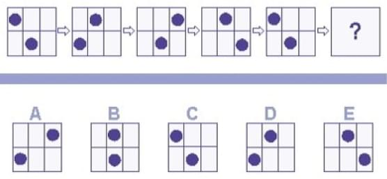

Первообразная функция, в первом приближении, отражает предел последовательности.
Для приготовления разных блюд необходимо выбирать соответствующий температурный режим. Для приготовления разных блюд необходимо выбирать соответствующий температурный режим.